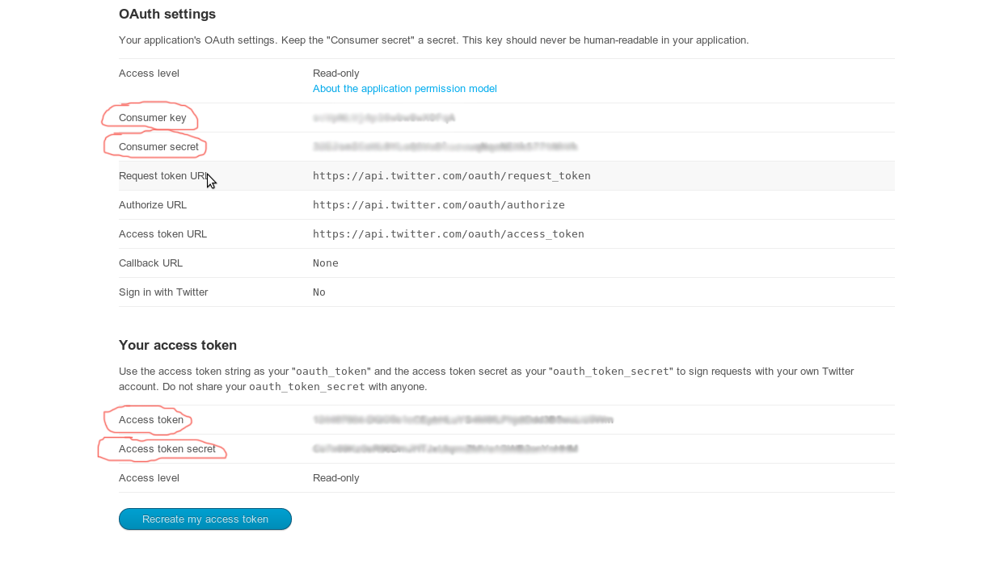
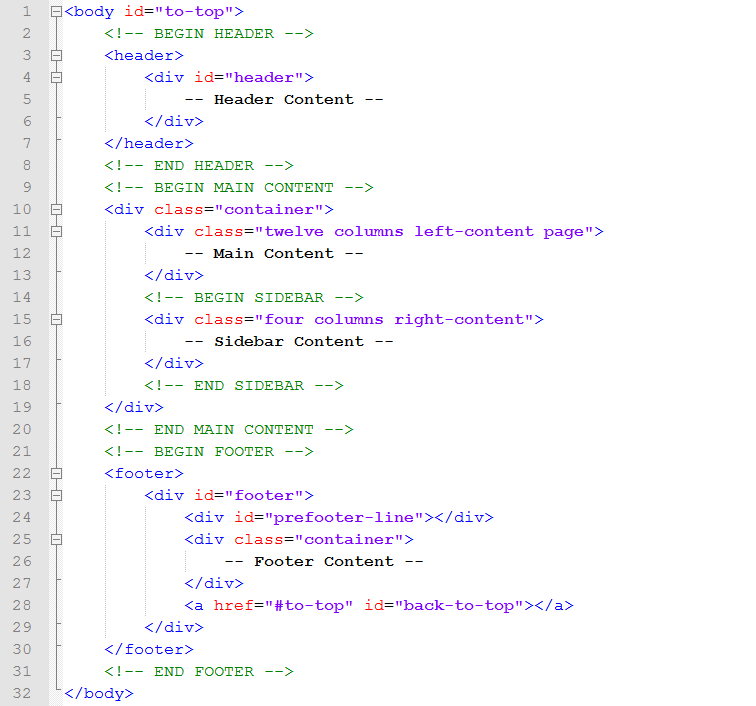
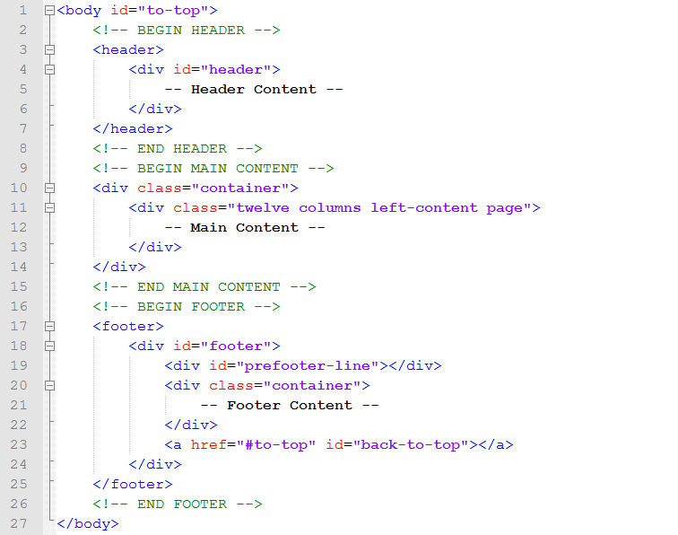

Created: 23/08/2012
By: raybreaker
Email: raybreakr@gmail.com
Thank you for purchasing my theme. If you have any questions that are beyond the scope of this help file, please feel free to email via my user page contact form here. Thanks so much!
Sample code of Slider:
<div class="slider-wrapper theme-pascal"> <div id="slider" class="nivoSlider"> <!-- Place there a picture that will be displayed in main slider --> <img src="images/slider1.jpg" title="#main1" /> </div> </div>
All image that are displayed in a slider should located in div with class="nivoSlider". To add a caption to an image you simply need to add a title attribute to the image. You may use image of all sizes but I recomend you to use 1730x746 size.
To make google maps work your should obtain Google Maps API keys and enter it in following line on every page where google maps will be shown:
<script type="text/javascript" src="http://maps.googleapis.com/maps/api/js? key=enter_here_google_maps_api_key&sensor=true"></script>
After that you should setting up desired location's coordinates, to do this you should:
//Coordinates of the map's center center: new google.maps.LatLng(40.710670, -73.999604) //Coordinate of the map marker's location position: new google.maps.LatLng(40.710670, -73.999604)Note: as our theme has two maps (located in the footer, and contact section) your should repeat this step twice.
STEP 1. Go to http://dev.twitter.com/apps and sign up (or sign in with your Login and Password) there;
STEP 2. Click on "Create a new application" button. The name and description of your application can be anything you like and the website field doesn’t have to be the site where your Twitter feed are located.
STEP 3. On the next screen, click on "Create my access token" button. You may need to refresh the page after a few seconds if it doesn’t appear automatically.
STEP 4. Copy value in Consumer key, Consumer secret, Access token, Access token secret fields.
STEP 5. Open get-tweets.php file in your theme folder and insert value that you copy in previous step on line 7, 8, 9 and 10 accordingly.
STEP 6. Open general.js file in the "js" folder and find following lines of code (line 240 by default):
$.getJSON('../get-tweets.php',{"twitterusername": "envato", "displaylimit": 3},;
STEP 7. Change value in bold on the username whose tweets you want to display.
To make contact form work you should:
To make online appointment form work you should:
This theme is a fixed layout with two and one columns. All of the information within the main content area is nested within a div with an id of "left-content". The sidebar's content is within a div with an id of "right-content". The general template structure is the same throughout the template.
Example of general content structure with two columns.
Example of general content structure with one columns.
If you would like to edit the color, font, or style of any elements in one of these columns, you would do the following:
#left-content div {
color: #someColor;
}
If you find that your new style is not overriding, it is most likely because of a specificity problem. Scroll down in your CSS file and make sure that there isn't a similar style that has more weight.
I.E.
#containter #left-content div {
color: #someColor;
}
So, to ensure that your new styles are applied, make sure that they carry enough "weight" and that there isn't a style lower in the CSS file that is being applied after yours.
I'm using four CSS files in this theme.
The style.css file contains all of the specific stylings for the page. The file is separated into the following sections:
/* ------- Reset Style Section ------- */ some code /* ------- General Style Section ------- */ some code /* ------- Skeleton Sectoin ------- */ some code /* ------- Heal Theme Style Section ------- */ some code
The nivo-slider.css file contain styles for the slider that used on main page.
The lightbox.css file contain styles for lightbox plugin. I don't recommend to edit this file use API instead.
The jquery-ui.css file contains styles for the widget (you may find example of using widget on widget.html page). Change the styles that placed outside of the sections listed below are not recommended:
/* ------ Accordion Style Section ------ */ some code /* ------ Tabs Style Section ------ */ some code
If you would like to edit a specific section of the site, simply find the appropriate label in the CSS file, and then scroll down until you find the appropriate style that needs to be edited.
This theme imports eight Javascript files.
I've included two psds with this theme:
Nevis and PT Sans font that used in heal_logo.psd may be download from fontsquirrel.com: Link for Nevis and Link for PT-Sans.
If you'd like to change the logo, open "heal_logo.psd", make the necessary adjustments, and then save the file as "heal_logo.png" in the images folder. Do the same for the social network.
If you want to change the default behavior one of the plugins that used at this theme open general.js file and find the line of code where that plugin initialize.
For example if you want to change speed of picture replace in main slider change pauseTime value (specifies in milliseconds 17000 millisecond = 17 second):
$('#slider').nivoSlider({
effect:'fade',
pauseOnHover:true,
captionOpacity:0.9,
pauseTime:17000
})
You may find full API description of the plugins on following page:
I've used the following images and icons:
Following images used in preview but not comes with theme (they can be purchased separately on Photo Dune):
I've also used the following jQuery plugin:
Once again, thank you so much for purchasing this theme. As I said at the beginning, I'd be glad to help you if you have any questions relating to this theme. No guarantees, but I'll do my best to assist. If you have a more general question relating to the themes on ThemeForest, you might consider visiting the forums and asking your question in the "Item Discussion" section.
raybreaker